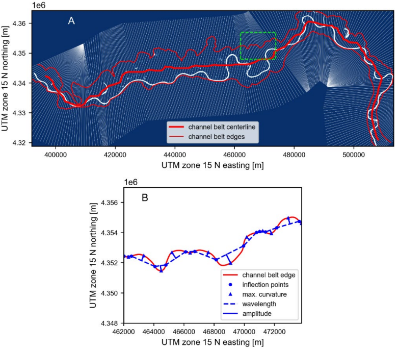

Note
Click here to download the full example code
Quantitative relationships between river and channel-belt planform patterns
Tian Dong and Timothy Goudge
This publication used RivGraph to find channel centerlines, widths, and number of channels en route to finding new relationships between river planforms and their channel belts.
# Using RivGraph to determine a centerline and its transects along the Missouri
# River. (B) shows planform metrics measured along the channel.
Total running time of the script: ( 0 minutes 0.000 seconds)